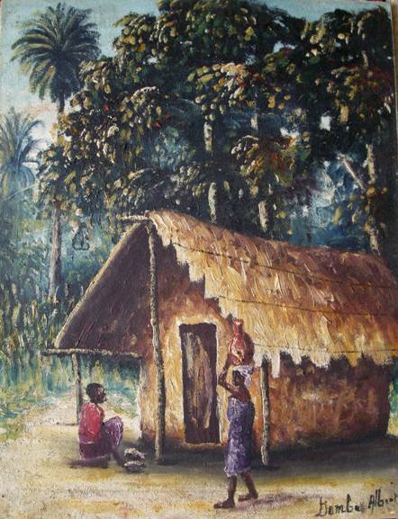

Albert Dombe
fl. 1950s/60s
Artist Biography
Albert Dombe was born in Thysville (now Mbanza-Ngungu) and was an artist working in the Belgian Congo and later the Democratic Republic of Congo during its transition from colonial rule to independence. Dombe’s style showed a certain naivety but he skilfully captured local scenes and colours. He was one of three painters featured in an article on L’art negre du Congo Belge by Andre Scohy in 1951 in which Scohy described him as the ‘Breughel Africain’. Dombe had a solo exhibition at Lulubourg (now known as Kananga) in 1952. In perhaps the major study of Congolese art in the twentieth century, Roger-Pierre Turine describes Dombe and Francois Thango as the only artists of any worth in the early period of President Mobutu’s rule in the 1960s.

Untitled